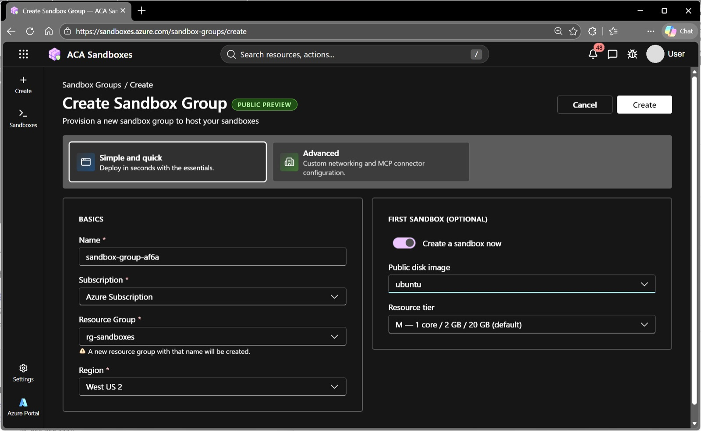
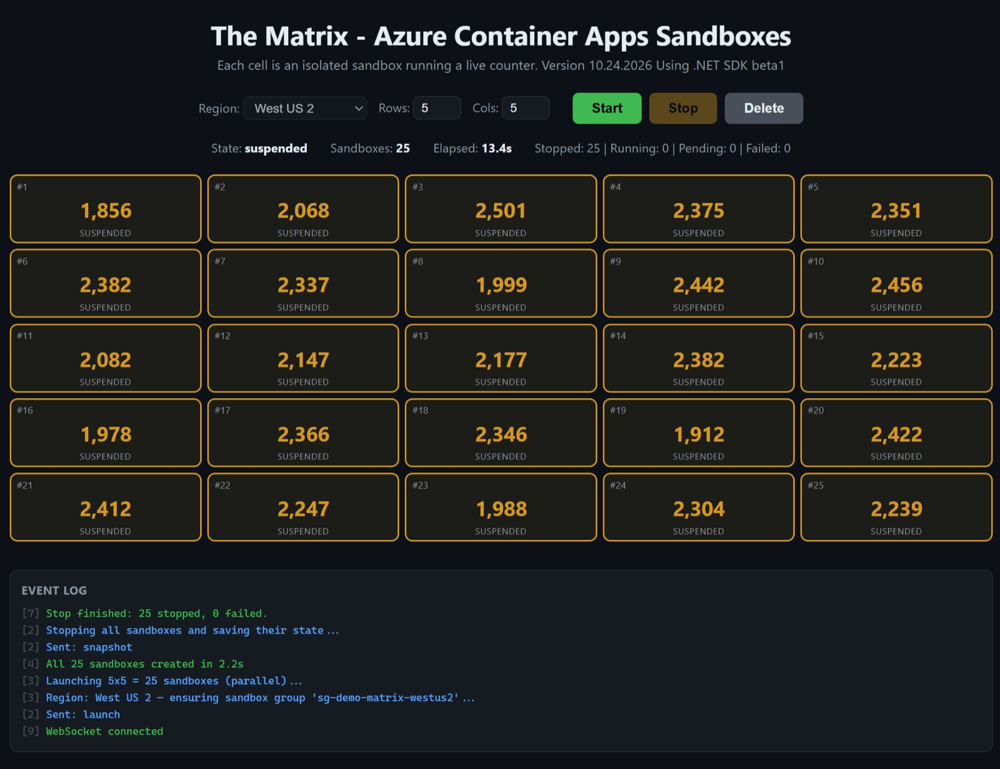
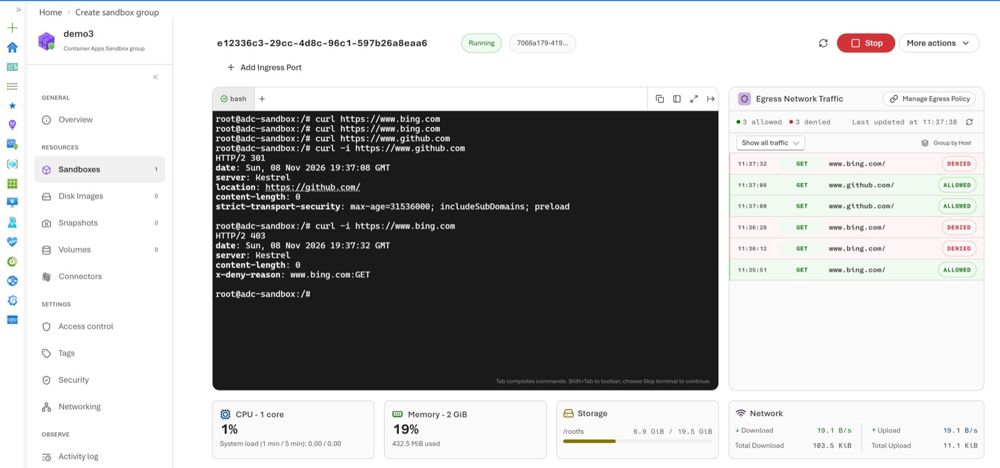
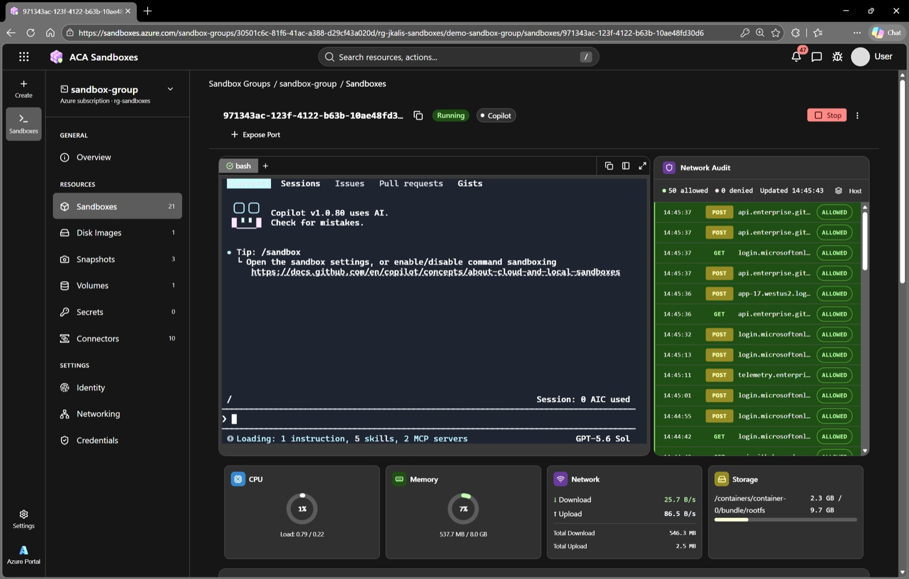

共享宿主机权限、隐私混入技能且常驻算力昂贵
个人在笔记本电脑上运行自进化智能体时，默认将整台设备作为信任域；一旦直接搬入大型企业，智能体编写的脚本与浏览器操作绝不能与其他租户共享内核，且员工个人的私密上下文若未经审核就自动写入全员技能库，会以同等速度向全公司扩散错误或泄漏敏感信息 [1][5]。
将智能体推入真实生产环境本质上是平台基础设施问题，而非单纯的大模型参数问题 [1][2]。在 Microsoft Ignite 2026 专场 BRK448 中，微软 Azure 容器应用团队联合 Nous Research 与工业软件厂商 Cognite 宣布 Azure Container Apps Sandboxes 正式商用：该硬件隔离微虚拟机底座现已在全球 44 个区域日均承载超 200 万个沙盒实例，同时作为 Microsoft Foundry Agent Service、Copilot Studio 与 GitHub Copilot 的统一底层执行基石 [1][3]。
01 / Governance Gap & Substrate
智能体一旦获准读写文件、编写脚本并调用外部业务接口，单纯依靠提示词约束便彻底失效 [1]。越是通过削减工具权限来换取安全，智能体解决复杂任务的业务价值就越萎缩；反之若放开执行权限，模型动态生成的非受信代码又随时可能击穿边界 [1]。2025 年 9 月发布的 Gartner 调查显示，在接受访谈的 360 位信息技术应用负责人中，74% 认为人工智能智能体构成了组织的新型攻击面，却仅有 13% 确信自身已具备管理大规模智能体集群的治理架构 [1][4]。
面向智能体时代的生产级沙盒不再是仅供概念验证或早期测试的临时游乐场，而是承载全天候业务循环的基础设施主干 [1]。微软宣布正式商用的 Azure Container Apps Sandboxes 采用硬件隔离微虚拟机架构，在全球 44 个区域日均运行超过 200 万个实例，目标可用性达 99.95% [1][3]。在微软内部，这套微虚拟机底座已成为跨产品线的公共安全执行层——同时支撑 Microsoft Foundry Agent Service、Microsoft Copilot Studio、GitHub Copilot 研发体验、Azure 站点可靠性智能体以及简化版应用托管服务 [1][2]。下方导览台内嵌了 BRK448 官方点播视频流、完整时间轴与原版讲义入口，点击顶部章节即可对照查阅四位讲者的核心拆解 [1]：
支持一键内嵌加载 Medius 官方点播流，按章节检视 Microsoft、Nous Research 与 Cognite 的演讲及四场实机演示。
02 / Nous Research Case
开源智能体向企业多租户生产迁移时，最棘手的矛盾在于“自主进化收益”与“跨团队风险扩散”同步放大 [1][5]。Nous Research 联合创始人兼首席技术官 Jeffrey Quesnelle 在专场中复盘了 Hermes Agent 的演进：这款一年前源于内部递归自我改进训练实验的开源项目，发布两周即登顶代码托管平台热门榜单，目前在公开模型路由平台上位居开源智能体调用量榜首，日均处理近 2 万亿词元 [1][5]。与早期要求用户手工编写技能文件的工具不同，Hermes 会在后台审视任务执行轨迹，自动把成功经验提炼为技能文件，并将重复出现的确定性步骤直接编译为无需反复消耗大模型算力的代码工作流 [1][5]。
个人在笔记本电脑上运行自进化智能体时，默认将整台设备作为信任域；一旦直接搬入大型企业，智能体编写的脚本与浏览器操作绝不能与其他租户共享内核，且员工个人的私密上下文若未经审核就自动写入全员技能库，会以同等速度向全公司扩散错误或泄漏敏感信息 [1][5]。
Hermes Enterprise 在上层构建身份路由与成本治理控制面，底层全面切换至 Azure 容器应用沙盒：每个工作空间独占微虚拟机内核与受限密钥网络，经评测审批的高价值工作流沉淀为企业自有集体智慧资产，且在用户切换窗口的 99% 空闲时段利用快照释放算力 [1][5]。
在商业经济账上，Quesnelle 给出了清晰的量化推演：随着每位员工同时驱使多个长程有状态智能体，企业并发规模正迈向数十万乃至上百万实例；而用户随时切出聊天窗口的交互习惯决定了负载高度突发、高达 99% 的时间处于等待或空闲状态 [1]。若为每个有状态工作空间维持一台常驻传统虚拟机，仅硬件账单就会在业务扩张期拖垮平台（假设单实例常驻占空比为 \alpha \approx 0.01，常驻计费浪费率高达 1 - \alpha = 99\%）[1]。切换至亚秒级启动并支持挂起恢复的微虚拟机沙盒后，Hermes 云平台截至 2026 年 10 月已稳定支撑超过 20,000 个活跃云端实例与 100 余家大型企业客户，同时在控制面提供“支出智能（Spend Intelligence）”滑杆——允许管理员测试将某类高阶模型调用比例从 100% 微调至 95% 时是否仍能维持同等任务表现，从而把词元与算力成本双双锁在可控区间 [1][5]。
03 / Architecture & Live Demos
为什么智能体在沙盒内拥有完整的根文件系统与命令行权限，却依然无法篡改网络边界或窃取接口密钥？微软首席产品经理 Jan Kalis 在架构深潜环节揭示了核心设计原则：所有网络策略与凭据注入组件均部署在沙盒微虚拟机边界之外，沙盒内部运行的模型代码对其既不可见也无权修改 [1][3]。
围绕这一架构，Kalis 在现场连续完成了四场零剪辑实机演示，覆盖沙盒创建、并发矩阵快照、零密钥出站转换以及企业连接器协同 [1]：
| 演示序号与主题 | 核心技术规格与配置项 | 现场实测现象与工程验证结论 |
|---|---|---|
| Demo 1：三端秒级创建 | 官方月更镜像（Ubuntu / Python / 智能体底座）；规格横跨 XS（0.25 核 / 0.5 GiB / 5 GiB）至 3XL（16 核 / 32 GiB / 320 GiB）[1] | 先后通过门户界面、az containerapp sandbox create 命令行及全新发布的 VS Code 资源扩展秒建实例，直连远端 Ubuntu 终端并实时观测处理器、内存与文件系统 [1] |
| Demo 2：并发矩阵与快照续跑 | OCI 容器镜像自动转换为可引导自定义磁盘镜像；外部入站代理默认全关，按端口显式开启流量唤醒与目录身份认证 [1] | 编排沙盒在 2.2 秒内并发拉起 5×5 共 25 个计数沙盒；点击停止即生成内存加磁盘快照并释放算力，再次启动时 25 个计数器从暂停数值处毫秒级无损续跑 [1] |
| Demo 3：出站管控与零密钥沙盒 | 出站代理默认拒绝全部流量（Deny All），按域名配置白名单；支持自定义转换规则（Transform Rules）与外部网络钩子 [1] |
沙盒内请求 bing.com 立即返回 HTTP 403 拦截，请求白名单 github.com 放行；配置转换规则后，沙盒无需持有真实密钥即可由外部代理在出站瞬间动态覆写注入 X-API-Key 请求头 [1] |
| Demo 4：连接器与日程智能体 | 群组级一次挂载超 1,700 个逻辑应用连接器（覆盖 Teams、SharePoint、Jira、GitHub 与 Work IQ），支持代理用户身份授权（OBO）[1] | 拉起预置令牌转换规则的 GitHub Copilot 沙盒，挂载 Work IQ 日历连接器并完成个人授权后，沙盒内智能体直接安全读取并汇总讲者当周的完整参会日程 [1] |
下方四宫格展示了从 BRK448 官方原版幻灯片提取的四幅实机演示高清截图，直观呈现了沙盒群组创建台、25 并发矩阵挂起面板、出站流量审计与零密钥控制台，以及挂载双模型上下文服务与 10 个连接器的智能体终端 [1]：

一步选定区域、官方月更镜像与微虚拟机规格（默认 M 档 1 核 / 2 GB / 20 GB），同时全面兼容 Bicep、Terraform 与 Python/.NET 开发包 [1]。

底部事件日志实证：5×5 共 25 个独立微虚拟机在 2.2 秒内全部创建完毕，执行快照停止后完整冻结各自计数内存且零失败释放计算资源 [1]。

右侧审计流清晰记录未授权域名返回 403 拒绝（x-deny-reason）而白名单域名放行；敏感凭据由外部代理通过转换规则动态注入 [1][3]。

终端底部显示智能体已加载 1 条指令、5 项技能与 2 个模型上下文服务，配合左侧挂载的持久卷与连接器安全访问企业日程与代码库 [1]。
由于沙盒本身可随时销毁重建，跨会话记忆与长程工作产物可通过群组挂载的托管数据磁盘、托管块存储、自有对象存储，以及即将上线的零密钥关系型数据库（支持 SQL 与 PostgreSQL）实现跨生命周期持久化 [1][3]。
04 / Industrial AI & Rollout
在石油天然气、能源与高端制造等重资产行业，哪怕单台泵机的数据也分散在压力传感器时序库、工单维护系统、管道及仪表流程图（P&ID）与三维工程模型等异构孤岛中 [1][6]。工业人工智能厂商 Cognite 首席解决方案架构师 Christian Flasshoff 介绍，其核心数据平台 Cognite Data Fusion 通过统一工业知识图谱消除了点对点集成瓶颈，目前已沉淀超过 100 万亿个工业数据点、50 亿个知识图谱节点与 4 亿份工程文档图纸，并通过单一接口向运行了三年的工业智能体套件 Atlas AI 供数 [1][6]。
然而，现场工程师提出的复杂工程问题无法靠几十个固定预置工具穷尽——智能体必须针对特定图纸动态编写并运行解析代码，同时严禁触碰高敏运营网络的未授权端点 [1]。将 Azure 容器应用沙盒作为“安全计算机”接入 Atlas AI 执行内核后，Cognite 仅用数天便跑通首个沙盒智能体原型，并在数周内推入生产环境成为核心标配 [1][6]：
维修工程师下达换热器检修准备指令，智能体检索工业知识图谱定位目标管道及仪表流程图，交由工程师确认双椭圆换热器主设备基准 [1]。
无需预先硬编码专用工具，智能体在独立微虚拟机沙盒内下载工程图纸文件、结合图谱设备层级编写并运行检验脚本，追踪冷热流体两侧全部相连管线 [1]。
智能体综合管线连通性与运行上下文生成完整隔离方案，同时访问令牌始终滞留在沙盒外部出站代理中，并通过私有虚拟网络保持内网闭环 [1][6]。
智能体在原始复杂工程图上精准框选高亮每一处待关闭隔离阀门与关联设备，将原本耗时易错的人工描图排查转化为分钟级可视化审批 [1]。
面向准备在企业内部复刻同类安全智能体架构的技术团队，BRK448 讲者团结合微软配套动手实验 LAB722（Caldova 多租户临床医药研究智能体架构） 凝练出三条可立即执行的工程落地准则 [1][3]：
永远假设大模型生成的代码与外部网页输入可能越界；为每个会话或租户分配独立微虚拟机内核，开启入站默认全关与出站默认全拒白名单 [1][6]。
通过外部出站代理的转换规则动态注入凭据，确保沙盒文件系统内零明文令牌；利用自定义磁盘镜像预装依赖，配合内存快照实现闲置零计费 [1][3]。
参照 LAB722 范式，用宿主编排器负责认证与任务拆解，按需拉起并行的临床与药物专职沙盒并在全部完成后触发独立质检沙盒，避免自建底层管道 [1]。
05 / References: Official Primary Sources & Engineering Guides
https://aka.ms/aca/ignite）